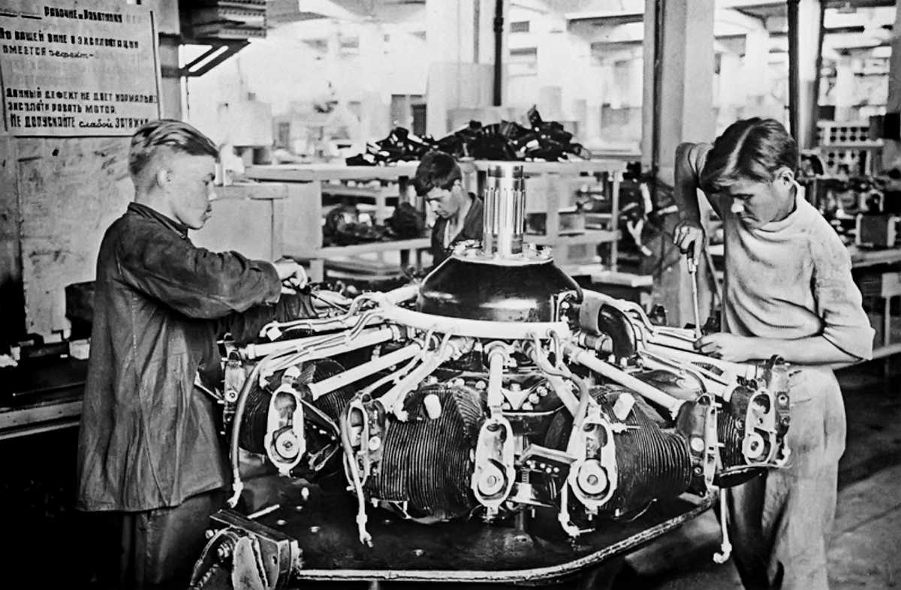
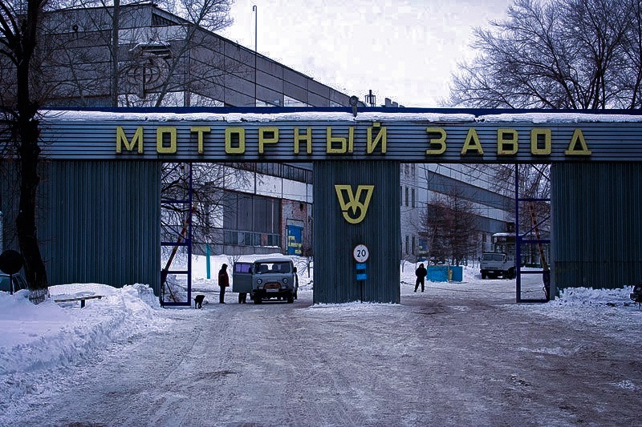

В 1826 году, купцом, потомственным почётным гражданином, Ильёй Андреевичем Андреевым, на южной окраине Симбирска был возведён «Чугунолитейный завод купцов Андреевых». В 1916 году завод со всей территорией, строениями и оборудованием выкупила петроградская фирма «Русский автомобильный завод Пузырёва»[1][2][3]. В 1917—1924 гг. — Симбирский государственный механический завод «Металлист» Симбирского губернского Совета Народного хозяйства, г. Симбирск, с 1924 г. — Ульяновский государственный механический завод «Металлист», с 1941 г. — Ульяновский механический завод филиала № 4 Московского автомобильного завода им.Сталина[4]. Знак "Ветеран УМЗ". В начале Великой Отечественной войны — осенью 1941 года в Ульяновск была эвакуирована часть цехов Московского автомобильного завода им. И. В. Сталина. В конце апреля 1942 года была собрана первая машина — «трёхтонка» ЗИС-5 , она была второй массовой моделью после «полуторки» ГАЗ-ММ Горьковского автозавода (ГАЗ), которая обеспечивала нужды Красной Армии в годы Великой Отечественной войны 1941—1945 годов. Завод переименован в УльЗиС.
Моторная завод Ульяновск
Главные трудности были связаны со сборкой грузовых машин ЗИС-5. Из Москвы прибыла партия инструмента и некоторых узлов автомобилей, но ленточный конвейер для сборки трехтонных автомобилей смонтировать в складском помещении было невозможно. Выход был найден в сборке машин «на козелках» - специально изготовленных сварных металлических подставках: на них устанавливали задний мост и переднюю ось, затем крепили раму. По такой технологии в апреле 1942 года был собран первый грузовик. Ежедневно 20 - 30 новеньких грузовиков ЗИС грузились на железнодорожные платформы и отправлялись на фронт. В октябре заработал главный конвейер сборки автомобилей. Всего на территории УМЗ в годы войны их было собрано около семи тысяч. В августе 1942 года завод получил особое правительственное задание: не прекращая выпуска ЗИС-5, в месячный срок организовать производство малолитражных двигателей. Выполнить задание было сложно, учитывая, что не было даже чертежей и разработанной технологии нового производства.

Разработка нового мотора
С 2001 года завод входит в Группу «ГАЗ». С 1 января 2006 года предприятию было возвращено название — Ульяновский моторный завод. В 2008 году ОАО «УМЗ» приступило к серийному выпуску автомобильных двигателей соответствующих требованиям норм токсичности Евро-3. Знак "Отличник качества УМЗ". В 2010 году предприятие первым в России стало серийно выпускать битопливный (газобензиновый) двигатель для лёгких коммерческих автомобилей. В 2011 году Ульяновский моторный завод приступил к производству новой модификации двигателя УМЗ-4216-70 с поликлиновым приводом навесных агрегатов, что позволило установить компрессор кондиционера, необходимый для поддержания в салоне автомобиля оптимального температурного режима, и более мощный генератор (свыше 1 кВт), дающий возможность подключать дополнительное электрооборудование.
УЛЬЯНОВСКИЙ МОТОРНЫЙ ЗАВОД - ИСТОРИЯ И ПЕРСПЕКТИВЫ
На пути к совершенству
Основной упор на заводе сделан на поставку двигателей, которые максимально адаптированы под «Газель» и «Соболь», а также под другие машины на базе этих автомобилей. УМЗ производит моторы, которые отвечают всем необходимым нормам стандарта «Евро-3». Главная задача для сотрудников завода сегодня – это еще более высокое качество, которым может обладать двигатель, на «Газель» устанавливаемый. Для повышения качества продукции на заводе по консультациям сторонних специалистов и сотрудников ГАЗа были проведены мероприятия, направленные на увеличение качества продукции. В ходе этой программы завод сменил поставщиков некоторых узлов и запчастей, ввел контроль качества на каждом этапе производства, снизил уровень дефектности конкретных узлов и продукции в целом. Сотрудничество ГАЗ и моторного завода позволило значительно повысить продукцию, которая используется на «Газелях». В конструкцию моторов постоянно вносятся существенные изменения, которые призваны сделать работу двигателя безупречной.
УМЗ располагает единственным в Ульяновской области металлургическим комплексом по производству литья из алюминиевых сплавов и термообработке. Здесь задействовано около 200 единиц оборудования, например, роторная установка Foseco для обработки алюминиевого сплава, ее применение позволило автоматизировать процессы модифицирования и флюсовки, значительно улучшить условия труда работников.